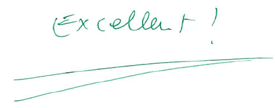

As I mentioned in my previous post, I was fortunate to enter graduate school with a few years of programming experience in R. I learned R exclusively through my Statistics classes; while I took the graduate-level psychology statistics course at Rice and was a research assistant in multiple departments, all used SPSS.
As this discrepancy suggests, the social sciences are often lagging behind in teaching and using open-source software. Fortunately, there is some effort to change this. The PhD director at INSEAD recently sent out an email expressing his delight that students were becoming increasingly interested in learning how to do computer programming. He announced that new students in future years would be asked to spend their summer before joining INSEAD learning basic programming, although it would not become an admission requirement.
While a few INSEAD students and research assistants use Python, R, MATLAB, or other languages, all the courses I took used STATA. Here’s a brief summary of my experience with STATA:
- Googling my problems and being directed to old listserv posts instead of the beautiful Stack Overflow answers I had been spoiled with when using R.
- Wishing there was a way to create reproducible documents with code, output, and explanations as I did with R Markdown and Jupyter Notebooks
- Yelling at the computer “I know how to do this in R!” and “This is better/easier/prettier in R!”
But STATA was the language of INSEAD’s analytical classes, and so STATA was the language I would use. Until I finally reached a breaking point while trying to replicate the MEMORE macro in STATA for a spontaneous class assignment by a teacher who had not yet tried to do so himself.
The MEMORE function
MEMORE stands for “MEdiation and MOderation in REpeated-measures designs” and is a macro for SPSS and SAS created by Montoya and Hayes. As they describe:
It estimates the total, direct, and indirect effects of X on Y through one or more mediators M in the two-condition or two-occasion within-subjects/repeated measures design. In a path analytic form using OLS regression as illustrated in Montoya and Hayes (2015), it implements the method described by Judd, Kenny, and McClelland (2001, Psychological Methods) and extended by Montoya and Hayes (2015) to multiple mediators. Along with an estimate of the indirect effect(s), MEMORE generates confidence intervals for inference about the indirect effect(s) using bootstrapping approach.
I managed to get the STATA code to work eventually, but in the meantime I decided to tackle it with R. I also wanted the chance to keep to continue practicing using R Markdown instead of R Scripts. With R Markdown, I could not only write a function equivalent to the MEMORE macro but also include an explanation of the function in the same document. Using a combination of the documentation of the function and the accompanying paper, I replicated the basic function and included the options for setting number of bootstrap repetitions, confidence interval (CI) size, and which bootstrap CI would be calculated.
This did earn me some praise from my difficult-to-please German professor:

I also created a GitHub repository to store my R Markdown document. But since March I had pretty much left it there.
Motivation
I had bookmarked Hilary Parker’s blog post on writing R packages months ago, but never got around to doing anything with it. I appreciated how straightforward and simple she made the process seem (and of course that she used an example with cats).
Since her post, Hadley had released a book on writing packages in R. I started reading the first chapter, but I quickly realized I would only really retain and understand writing packages if I did it myself. So I decided to finally turn the MEMORE R Markdown document into a real, easily useable package.
Turning this function into a package offers a few benefits:
Better Understanding of Packages: When I want to understand what a function does or what parameters it accepts, I usually look at the documentation. But sometimes I want look at the implementation of the function. For a package with many files and folders (e.g. ggplot2), this can quickly become overwhelming. Going through the steps of writing my own package should help me understand the importance of each component and the overall organization.
Contributing to Open-Source: Unlike STATA, SPSS, or SAS, R is a free, open-source software. Without the many people who volunteer their time to create new packages, fix bugs, and answer questions for no financial compensation, R could not hope to compete with those softwares. The people I know in the R community have been very welcoming, and I hope to meet more by attending conferences such as rstudio::conf and useR!. Eventually I want to write packages that go beyond just adding one statistical tool to contributing the data analysis process itself. But first I need to learn the basic structure of creating a package. I’m not sure if anyone will ever use my package, but I’m sure the exercise will pay off in the long run.
To Be Continued
Trying to write my first R program while in the middle of a data science boot camp based in Python is not easy. Any time I could set aside for it could also be spent working on my boot camp projects or trying to consolidate what we learned that day or week. I’m still optimistic that I’ll get it done before the boot camp ends in mid-September, but even if not, I’ll write follow-up blog post where I document the process of creating an R package.